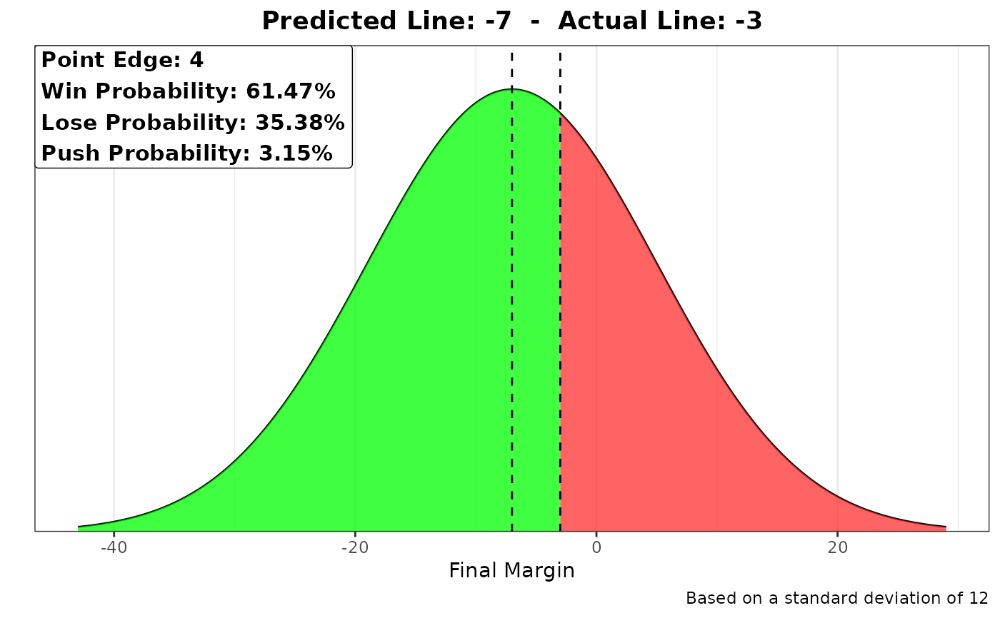
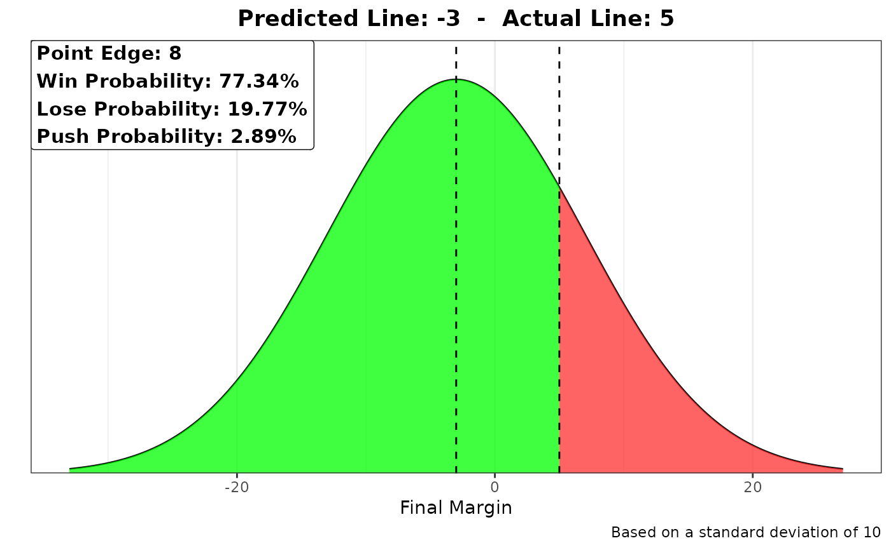

This function plots the win, loss, and push probabilities of a given bet based on the current line and your predicted line.
bet_prob_plot(pred_spread, spread, sport = "NBA")
Arguments
| pred_spread | Predicted spread for the team you want to bet on |
|---|---|
| spread | Spread for the team that you want to bet on (-3.5, -7, 4, 2.5) |
| sport | Sport/League of the teams being bet on. Possible values are:
|
Value
probs Plot of the simulation as well as the percentage of simulations that were positive and negative.
References
Stern, Hal. "The Probability of Winning a Football Game as a function of the Pointspread." The American Statistician 45, no. 3 (1991): 179-83. Accessed July 18, 2020. doi:10.2307/2684286. https://statistics.stanford.edu/sites/g/files/sbiybj6031/f/COV%20NSF%2059.pdf
Stern, Hal. "On the Probability of Winning a Football Game." The American Statistician 45, no. 3 (1991): 179-83. Accessed July 18, 2020. doi:10.2307/2684286. https://www-jstor-org.turing.library.northwestern.edu/stable/2684286
Winston, Wayne L. "From Point Ratings to Probabilities." In Mathletics: How Gamblers, Managers, and Sports Enthusiasts Use Mathematics in Baseball, Basketball, and Football, 290-97. PRINCETON; OXFORD: Princeton University Press, 2009. Accessed July 18, 2020. doi:10.2307/j.ctt7sj9q.48.
Examples
bet_prob_plot(-9, -3.5, sport = "NFL")bet_prob_plot(-7, -3, sport = "NBA")bet_prob_plot(21, 10.5, sport = "NCAAF")bet_prob_plot(-3, 5, sport = "NCAAB")